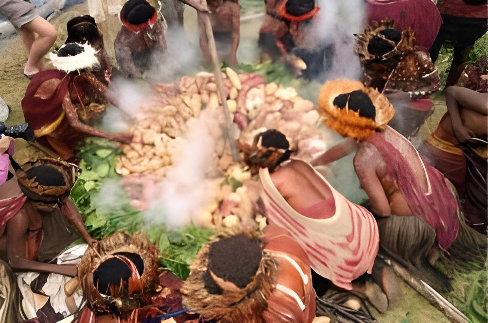

Rumah Honai adalah rumah tradisional ikonik suku Dani di Papua, Indonesia.
Mereka memiliki bentuk bundar dengan atap berkubah dari jerami atau ilalang.
Rumah ini berukuran sekitar 3-4 meter dalam diameter dan 4-6 meter tingginya.
Dindingnya terbuat dari anyaman bambu, tanah liat di lantai, dan tidak memiliki jendela permanen.
Rumah ini digunakan sebagai tempat tinggal, tempat pertemuan keluarga, dan tempat penyimpanan barang
berharga suku Dani. Sejarah Rumah Honai mencakup berabad-abad, mencerminkan warisan budaya suku Dani
yang kaya. Meskipun modernisasi telah mempengaruhi desain mereka, rumah Honai tetap menjadi simbol
penting dalam identitas dan sejarah suku Dani di Papua.
Koteka, juga dikenal sebagai "horim," adalah pakaian tradisional yang digunakan oleh suku asli Papua, seperti suku Dani dan Asmat di Papua, Indonesia. Koteka adalah pakaian khas yang menutupi area genital pria. Biasanya terbuat dari kulit kayu, kulit hewan, atau bahan-bahan organik lainnya dan dihiasi dengan motif dan ornamen tradisional. Koteka adalah simbol budaya dan identitas bagi suku-suku ini dan mencerminkan koneksi mereka dengan alam. Meskipun pengaruh modernisasi telah mempengaruhi pakaian tradisional di beberapa komunitas, koteka tetap menjadi simbol kebanggaan budaya dan sejarah suku Papua yang beragam.
Sajojo adalah tarian dan lagu tradisional yang berasal dari suku Papua, Indonesia. Tarian ini adalah ekspresi budaya yang energetik dan meriah, melibatkan gerakan yang ritmis dan sering diiringi oleh musik tradisional seperti tifa (gendang kecil) dan seruling. Penari biasanya mengenakan pakaian tradisional suku Papua, termasuk koteka dan hiasan kepala yang berwarna-warni. Sajojo memiliki akar dalam sejarah dan budaya suku Papua yang kaya, digunakan dalam berbagai upacara adat, pertemuan suku, atau sebagai bentuk hiburan. Meskipun pengaruh modernisasi telah memengaruhi tarian ini, Sajojo tetap menjadi simbol penting identitas dan warisan budaya suku Papua, mempertahankan semangat dan kegembiraan mereka.
Upacara Adat Bakar Batu Papua adalah ritual tradisional yang dijalankan oleh suku-suku di Papua, Indonesia. Ritual ini melibatkan pemanasan batu besar hingga membara dalam lubang tanah yang digali. Makanan seperti ubi, ikan, daging babi, dan sayuran kemudian diletakkan di atas batu panas dan dimasak dengan daun-daun, menciptakan hidangan yang lezat. Selama upacara, suku-suku Papua bernyanyi, menari, dan berdoa sebagai tanda penghormatan kepada leluhur dan alam. Upacara ini telah menjadi bagian penting dalam budaya mereka, mewakili hubungan erat mereka dengan alam dan tradisi leluhur. Meskipun dunia modern telah berubah, upacara ini masih dijalankan untuk melestarikan budaya dan warisan suku Papua.
